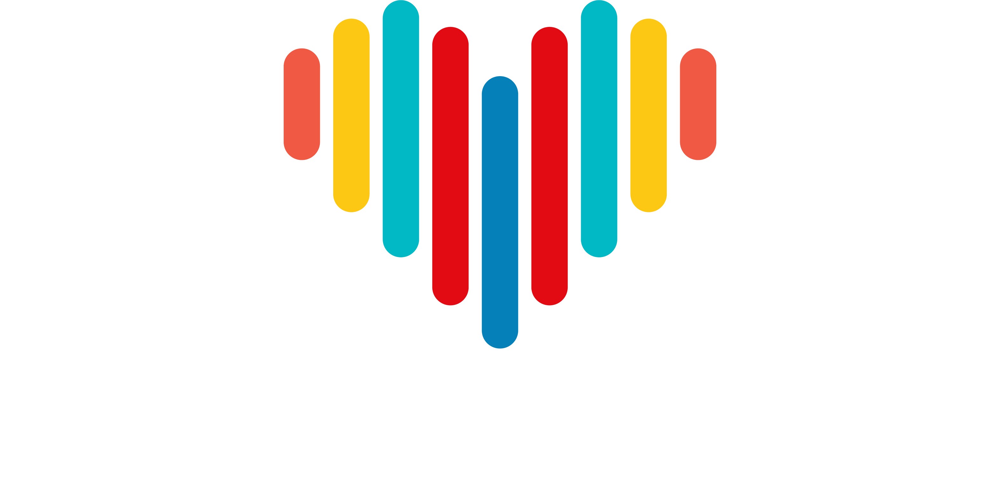

Bayrakstar Yönetim
Devam etmek için şifre girin
Kaydettiklerin doğrudan yayına gider
Giriş Yap

Yönetim Paneli
colorful life
İçerik: —
↺ Sıfırla
⬆ JSON Yükle
⬇ JSON İndir
☁️ Kaydet & Yayınla
Kaydedildi
↩ Geri al